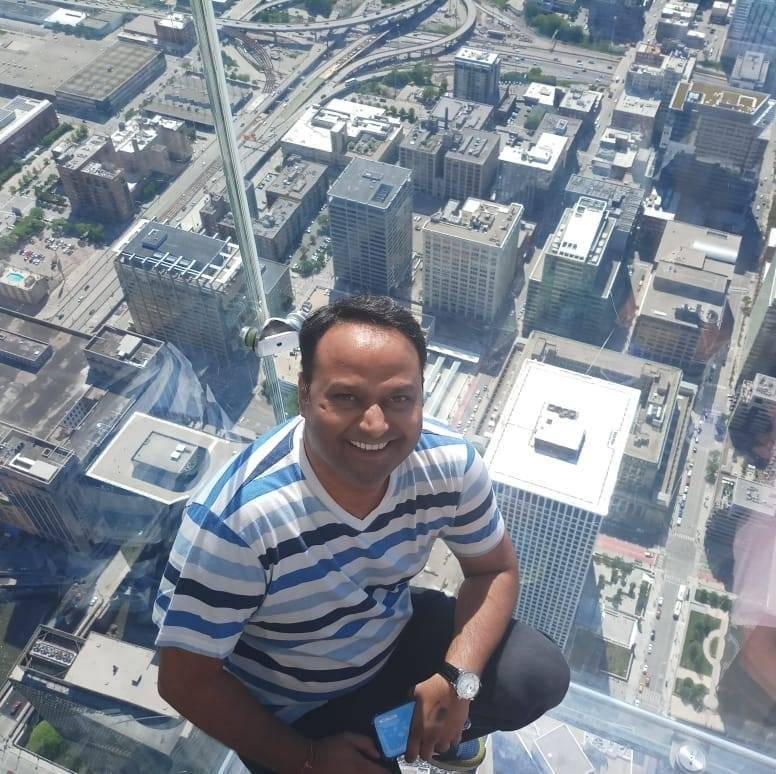

Start from the decision
Not the model catalog. What choice must a human make — and what data, risk, and latency make that choice real?
About · the person behind the systems
I design AI that still matters after the applause fades — systems teams can operate, trust, and evolve.
For eight years I have lived where models meet machines that must not fail — telecom networks, finance rails, healthcare systems that carry real people. My craft sits between Generative AI, classical ML, and production architecture: grounding LLMs, shaping RAG that retrieves truth, and shipping agents that behave under constraints.
I graduated with an M.Tech in Data Science from IIT Hyderabad — not as a trophy, but as a sharper lens on how GenAI remakes banking, retail, telecom, and care. Away from the keyboard I travel, sit with quieter questions of meaning, and keep learning for the joy of it.
Three habits that keep architecture honest.
Not the model catalog. What choice must a human make — and what data, risk, and latency make that choice real?
Prefer a vertical slice that reaches production over a wide prototype that stalls in a slide deck.
Evals, monitoring, and clear ownership are not add-ons. They are the architecture.
Tools I reach for when demos must become systems.
LLM architecture · RAG / GraphRAG · MCP · A2A · Google ADK · LangGraph · Vertex Agent Engine · agent memory · computer-use patterns · structured generation · evals (LangSmith / Braintrust / DeepEval) · tool-layer security · durable agents · Gemini / GPT / LLaMA · fine-tuning
PyTorch · Transformers · TensorFlow · scikit-learn · computer vision · NLP · time series
GCP · Vertex AI · Cloud Run · BigQuery · Firestore · Pub/Sub · Docker · Pulumi · FastAPI · Next.js
Cost / latency / quality trade-offs · PHI-aware design · agent identity & least privilege · observability · multi-tenant RBAC · durable workflows
Where the craft was sharpened.
People I have built with or learned under. More on LinkedIn; additional references on request.
Technical Program Manager @ Equinix
Buddhadeb is very passionate about his work and delivers his best, both in terms of quality and quantity. I've worked with him for more than a year and appreciate his curious nature to learn and grow, not only in his domain but outside. He is someone worth investing all the time and effort because you know that you are getting the biggest bang for your buck. I would recommend him any day and would be happy to work with him in the future.
Assistant Professor @ NIT Durgapur
I first met Buddha in 2014, when he was placed under my supervision. From the start, he showed initiative and developed many projects for my classes to use. He helped my team with their theories on image decomposition, by creating scripts to compile and sort data. His desire to create quality work has served him well during his time at JIS, and will continue to do so in the future.
Radio Frequency Engineer @ Sprint
Buddhadeb is very passionate and has a great vision for his work. He is a proactive, result oriented, responsible and technically sound associate and always strives to keep up to date with all the new technologies. He has an exceptional troubleshooting and analytical skills.

Senior Manager @ Ericsson
Buddha will be a valuable asset to any company. I highly recommend working with a professional like Buddhadeb.